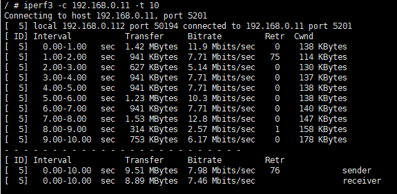

7. Tests¶
7.1. Throughput Test¶
Wifiof Can Throughput Test and 。 Throughput Test UseofToolsisiperf3。Tests as follows：
PCThrough ofwith andWirelessRouter（wireless AP） ，CVITEKPlatform Wi-FiandWirelessRouter 。 in Examplein，PCofIPAddressis192.168.0.11，CVITEKPlatformofIPAddressis192.168.0.112。PCandCVITEKPlatform iperf3Tools。
7.1.1. Transmit Throughput Test¶
Steps 1. inPCon iperf3ToolsContents，Executeas followsCommand：
iperf3 -s
Steps 2. PlatformExecuteshellCommandas follows：
Test the TCP Protocol
iperf3 -c 192.168.0.11 -t 10
Test the UDP Protocol
iperf3 -c 192.168.0.11 -t 10 -u -b 100M -l 32k
iperf3 TestsCan ResultIfonFigure。 Can iperf3 -h Description。 onFigureCan to10seconds is7.98Mbps。
7.1.2. Receive Throughput Test¶
Steps 1. inon the platformExecuteshellCommandas follows：
iperf3 -s
Steps 2. PCon iperf3ToolsContentsExecuteCommandas follows：
Test the TCP Protocol
iperf3 -c 192.168.0.112 -t 10
Test the UDP Protocol
iperf3 -c 192.168.0.112 -t 10 -u -b 100M -l 32k